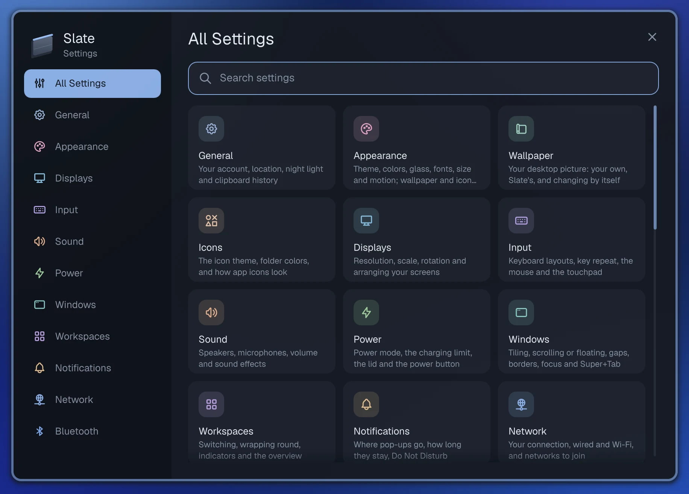
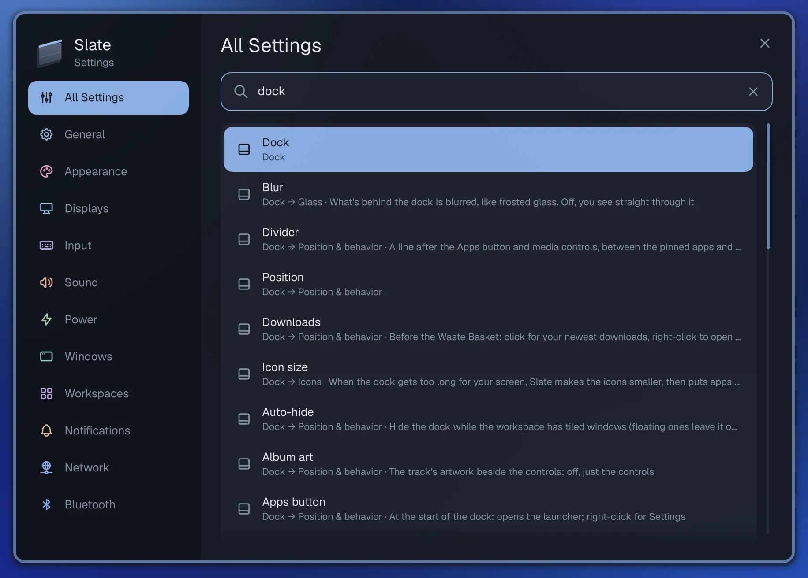
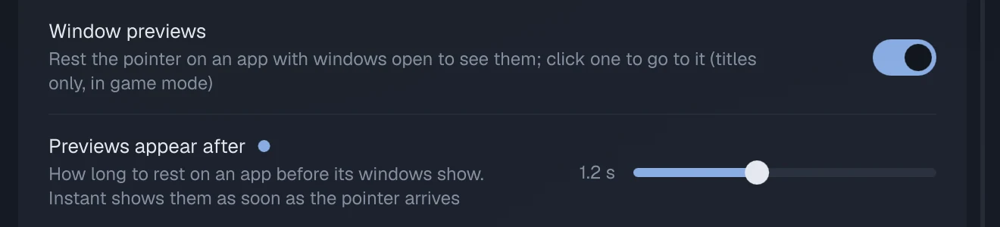

Reference
The Settings app
Every setting in Slate is in one place: the Settings app. Search finds any of them in a moment, and anything you change can be put back just as easily.
Opening Settings
- Press Super + Z.
- Choose the gear in the control center (Super + X).
- Follow the link at the bottom of any of the menu bar's panels, or a right-click menu's settings item, to go straight to its page.
- Type a setting's name in the launcher: every setting is searchable from there too.
If Slate reloads or restarts while Settings is open, it comes back on the same page, scrolled to the same place. Move the window by dragging the top of its sidebar or a page's header. While it's open, Settings goes with you when you switch workspace, so it's always where you are; Super + Z brings it to the front, or closes it when you're in it.
All Settings
Settings opens on All Settings: a tile for every page, each with a line about what's on it, and a search box across the top. Every other page has a back button to return here.

The sidebar
The pages you'll use most are down the sidebar: General, Appearance, Displays, Input, Sound, Windows, Workspaces, Accessibility, Network and Bluetooth. The rest, such as Notifications, Power, Menu Bar, Dock, Launcher, Shortcuts, Updates and About, are tiles on All Settings.
Pages within pages
Wallpaper, Icons and App Theming belong to Appearance: open them from the top of Settings → Appearance. While you're on one, Appearance stays lit in the sidebar, and the back button returns to it.
Searching
Type in the search box on any page, a word or two is enough. It searches every setting by its name, its description and other words people might use ("dpi" finds Interface size, for instance), and shows each match with the page it's on.

Choose a result and Settings opens that page, scrolled to the setting and lit up for a moment, so it's easy to spot.
What you've changed
A small dot after a setting's name means you've changed it from how Slate starts out. Point at the dot to see the default, and click it to put that setting back.

Settings that need another
Some settings only work alongside another one, like Accent boldness, which needs Accent color from wallpaper to be on. While the other one isn't set that way, the setting is grayed out and a short line under it says what it needs ("Needs Accent color from wallpaper to be on"). Click that line to go straight to the setting it needs, lit up for a moment.
Restore defaults
Restore defaults, opposite each page's title, puts every setting on that page back as Slate first had it. It can be clicked once something on the page has changed, and asks first, saying how many settings it will change. Your other pages are left just as they are.
To put everything back at once, there's a factory reset in Settings → Debug. It asks twice and keeps a backup: see Troubleshooting.
The pages
Each has a page in these docs:
| Settings page | In these docs |
|---|---|
| General | Night Light, Game Mode and Caffeine |
| Appearance, with Wallpaper, Icons and App Theming | Appearance, Wallpaper, Icons and pointers, App theming |
| Displays | Displays |
| Input | Keyboard, mouse and touchpad |
| Sound | Sound |
| Power | Power and battery |
| Windows | Windows |
| Workspaces | Workspaces and the overview |
| Notifications | Notifications and indicators |
| Network, Bluetooth | Network and Bluetooth |
| Printers, Webcam | Printers and the webcam |
| Menu Bar | The menu bar |
| Control Center | Control center and panels |
| Dock | The dock |
| Launcher | The launcher |
| Spaces | Spaces |
| Hot Corners | Hot corners |
| Security, Screensaver | Locking and login |
| Shortcuts | Keyboard shortcuts |
| Default Apps, Startup Apps | Default and startup apps |
| Region | Region and time |
| Screenshots | Screenshots |
| Assistant | Nova, the assistant and Slate for AI agents |
| Updates | Updates |
| Debug | Troubleshooting |
| About | Your own config |
Settings and your own files
Settings are kept in one file, ~/.config/slate/settings.json
( Settings → About → Settings file opens it). For
Hyprland's side of things, such as keyboard, mouse and focus, Settings only sets what you change there:
anything else keeps what your own files say. See Your own config.